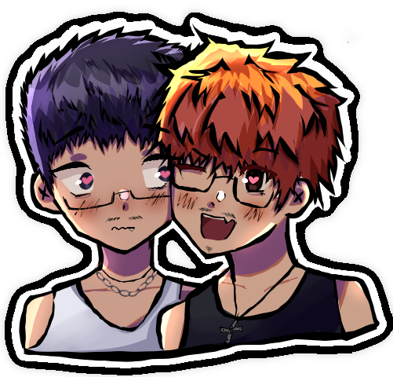
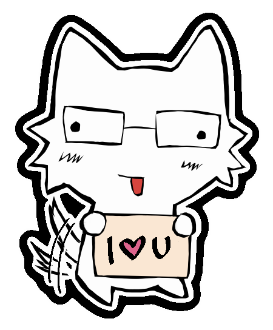
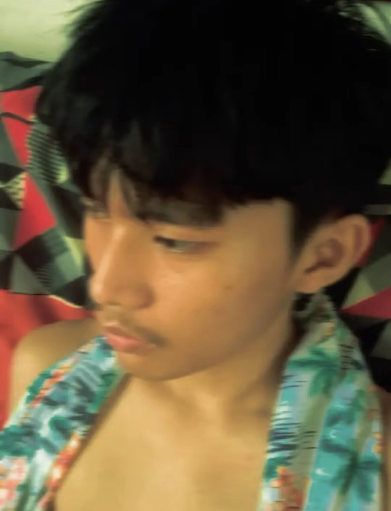
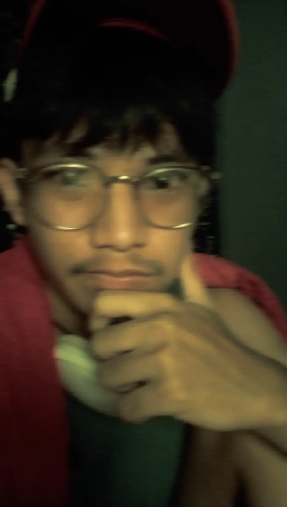
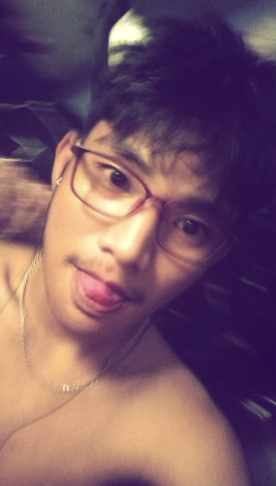
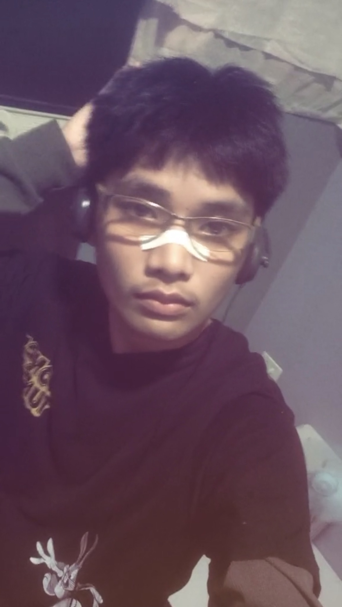
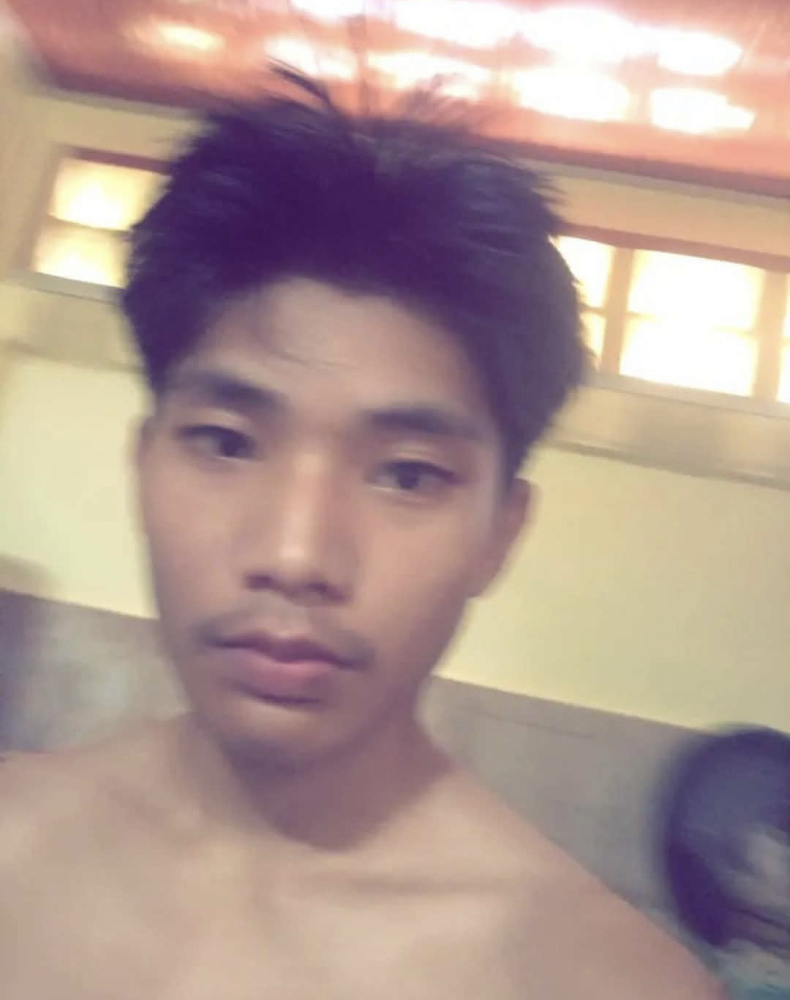

helow kenjie :D
HI KENJIE HIIHIH HI IH
Dear Kenjie,
^_^HELLOOOLBROROROROO!! hi rekezai, my goat!! or also just: Kenjie, the guy I like a LOT.
I'm going to be writing this like a real letter, so don't mind my sudden articulacy. I'm not going to be writing this formatted like adik akong nakadroga (my usual self) :pp. To make it easier to read! So rare, right? Ian structuring his sentences with correct punctuations and pacing. :0
Hi Kenjie :p, isn't it funny? With the amount of sweetness and exclusivity we have going on between right now, you'd think we would be officially boyfriends by now T__T, even my friend seems to think so HSDJHKSJFK... Sometimes, I catch myself thinking about asking you this, but I also thought it was too early, and I wanted you to know me a lot more, before I did so! I want you to know "me," the real "me," first. And I wanted the same! I think you know where this letter is going, no? Hehe...
I feel like I have NOT been subtle at all about wanting to be official. But you know, you haven't exactly been subtle either, so #fairs (GIGGLE)! Sometimes I think too, maybe you wanted to ask me this certain question I have on my mind too? Maybe it's not just me going crazy? Time and time again, you prove this hypothesis T__T. I believe you when you say you're buang na buang na, because I am too. I hope you know that. I really, really do like you!!!
The first time we met, I didn't have a "crush" on you. Yes, you were cool, but I'm not someone who wants to marry every guy I find cool, LMAOOO!!! But, I did notice you. A lot more than most T__T. Your amazing art that genuinely made me a fan of you. I don't know what it is, but I genuinely do find your art amazing. I find your skills amazing. As an artist myself, I'd like to say some kind of understanding towards art, and things that are "objectively good" in art.
I noticed your creative work, and this stupid little admiration I had towards you genuinely grew into something very special. I love the way you render, it's so.. smooth, yet spontaneous? It's not exactly hyper-clean, but it isn't messy either. It's like it's obvious that you're a very good traditional artist. Your digital art genuinely feels like paintings, and if I started talking about your traditional art, it would never end T__T. But, I guess I'll try to shorten it..! IT'S AMAZING. I admire your skills so much, Kenjie! :DD I love your sketches SOOO much!! Not to mention, you're so good at anything related to creative graphics T__T designing, lettering, layouts, and even 3d modelling.. I'd have to learn some pointers from you O^O
I think it's so cool how you can capture details so well, and so accurately?!?!?! I love your still life drawings, your stylized drawings, and your more realistic drawingns. I'm not kidding or exaggerating when I do compliment you and go crazy over your art. I really do just admire your art and your skills that much. I really loved the commissioned art you made for me T__T LIKE REALLY. IT'S SOOO GOOD. My dream in the coming years would, probably, be to get a physical copy of your drawing. Like, a sketch on paper, from you! I hope this rambling is making you understand what makes me, another artist, appreciate your work so much T__T
making you understand what makes me, another artist, appreciate your work so much T__T And this admiration, precisely, is what made me want to talk to you. But, the reason I stayed and kept looking forward everyday went beyond that. You were such an enthusiastic guy, and I love people like that! I remember you telling me that you're an introvert, and seeing you just be so enthusiastic and excited to talk all the time, really made me feel special. I think, around that time, is when I started noticing that I'd wait for your messages too.
You're MY puppy, and you're one hell of a good puppy. From what you've shown me, you work really hard T__T. Recently, yung research nyo, I saw how responsible you are and how hard you've been pushing yourself. I really do admire your resilience, and I want you to know that there's someone out there who pays attention to your efforts, even when they leave you exhausted. This thing you have seems to spill onto different parts of your life T__T. For example, you always make a great deal of effort just to make me feel happy, and comfortable. And that always makes me want to reciprocate it! Hence why I made this letter! I admire your dedication and resilience. I'm so proud of your effort and resilience T__T but please, remember to rest, okay? In times like this, I just wish I could cuddle you and watch you turn into a soft puppy in real time T__T.
I want to say how happy I am that you don't feel shy about showing how much you like me! It always makes me so happy... You don't need a grand reason or some special gesture just to make me happy. Just chatting with you is enough, and goddamn.. I feel sososo happy knowing the person I'm always excited about, is also excted about me too. I don't feel bad about liking you, when you're the one who always shows how much you like me. I love it.. I wanna keep being like this with you T__T. I don't want to hold back my feelings, and I hope I don't make you feel like you have to hold back your feelings, at all.
Getting random updates from you genuinely makes me smile T__T. I'll also keep in mind to update you too :p. I love updating, and you told me once how you love being updated. HUagytdhijh I'm so happy!!! I love how we went from having silly little crushes, to slowly being part of each other's lives.
The only things I desire the most right now, are to, one, now a LOT more about you, maybe even EVERYTHING about you, and two, make you feel comfortable enough that you can tell me anything, because I genuinely would never find you weird, or judge you. If anything, knowing the """weird,""" """unconventional""" parts of you would make me feel closer to you. I'd rather have YOU, than an idealized version of you that isn't the real you. I want you to feel like you can be truly real with me T__T
I want to discover more of who you are, including sides of you I haven't seen yet! Even the "bad" parts that people always say to "hide." I want you to feel like you don't have to edit or curate yourself just to be worthy of my affection. I'd give it to you either way, and being closer to you by knowing more about you, would help make it feel very real T__T. It made me feel so happy to see you say that, being with me helped you become more real to yourself, and embrace your boykisserness! And of course, if anything is ever bothering you, I want you to know that I'd always be here to listen, if you want that! I won't promise that I'll always know the right thing to say, or that I'd be available every second, but I will genuinely try my best!
From this point on, I want to do sooo many things with you in the coming days, months, maybe even years! I wanna spoil you with food @-@, do more stupid, silly things together, talk about stupid stuff, maybe do an ART COLLAB :0, and I want to keep supporting Rekezai, my #1 fav artist! I want to discover SOOO MANY new things with you! We do not know each other very very well yet, and that's something I am looking forward to, a lot! Let's get to know each other a lot more, hmm?
OK ENOUGH YAPPING! SO, here it is, the long awaited question:
DO YOU WANT TO BE MY BEST BEST BESTEST FRIEND EVER?!!! :DDD


HEHE JK!
ALEXIS KENJIE M. ADOLFO, WILL YOU BE MY BOYFRIEND? :D






YAYAYA YIPPIEE WOOWO!!!111
a playlist for my new bf o^o
open the playlst on spotify!HELLO MY HANDSOME BOYFRIENDDMND